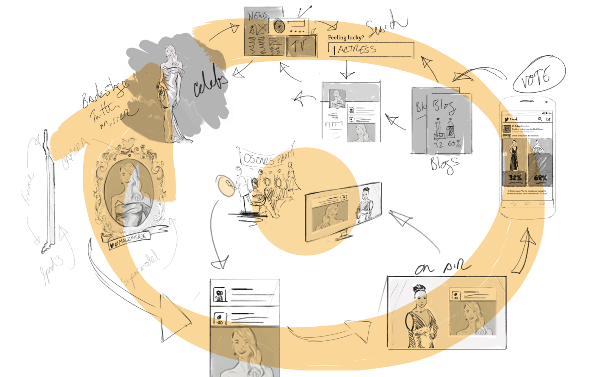

Imagine friends gathered for an Oscars party.
Swirling around them are the orbital elements of interaction, including backstage
Twitter Mirrors for celebrity selfies, in-Tweet voting with lovely photos and
visual vote buttons that turn into animated bar graphs of instant results, embedded Tweets, on-air broadcast
moments, profile pages accessed through search engines, all amplified through the
Twitter platform and celebrity reach.
ROLE
Experience Architect
PRODUCTS
Twitter Mirror, Visual Voting
RESULTS
New users, new revenue, increased platform adoption by the celebrities, increased user engagement, free on-air product placement from hosts.